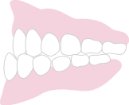
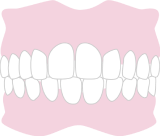
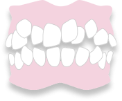
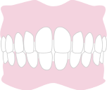

このようなお悩みは
ありませんか？
-
矯正したいけど
どれくらいの費用？ - 目立つ矯正はイヤ
- 前歯だけ治療したい
- 早く歯列を治したい
- 矯正の痛みが不安
当てはまる歯並びはありませんか？
-

前歯が出ている
（出っ歯） -

下顎が出ている
（受け口） -

口元が出ている
（口ゴボ） -

上下の歯が
ズレている -

歯並びが
デコボコ -

噛み合わせが
深い -

前歯が
噛み合わない -

歯と歯の隙間が
広い
ご相談は無料です
お気軽にご相談ください
マウスピース矯正のメリット
マウスピース矯正は、透明なマウスピース型カスタムメイド矯正装置（アライナー）を装着して歯を動かす矯正治療です。
取り外しが簡単で、ワイヤー矯正に抵抗がある方にも選ばれています。
ワイヤー矯正

金属装置は目立つ
装着の不快感がある
自分で装置を外せない
２週間に１度の通院が必要
食べかすがつまりやすい
マウスピース矯正

透明で薄いので目立たない
痛みが少ない
自分で取り外せる
通院頻度が少ない
食事や歯磨きがいつも通り
動画で見る
マウスピース矯正
- 当院が使用するマウスピース型カスタムメイド矯正装置（製品名:インビザライン®、以下省略）は米国アライン・テクノロジー社の製品であり、薬機法対象外です。そのため、医薬品副作用被害救済制度の対象外となる場合があります。当院は、アライン・テクノロジー・ジャパン社を介して入手しています。
- 当院で使用しているマウスピース型カスタムメイド矯正装置以外に、日本で承認を得ている医療機器・矯正装置は存在します。
ハチマンデンタルクリニックのマウスピース矯正が 選ばれる5つの理由
Reason01 矯正認定医と口腔外科専門医が在籍
矯正専門医が治療を監修し、担当医が責任を持って対応します。さらに、親知らずの抜歯など外科的な処置も口腔外科専門医が院内で対応可能です。安心して治療をお任せください。
Reason02 無料カウンセリングで3Dシミュレーションを実施
当院では無料カウンセリング時に簡易的な3Dシミュレーションを実施し、治療後の歯並びを視覚的に確認していただけます。治療の仕上がりを事前にご確認いただき、安心して始められます。

Reason03 お子さまから大人まで通いやすい
成長期のお子さまから大人の方まで、幅広い年齢層の患者さまに対応可能です。特に透明なマウスピースを使った矯正治療は、顎の成長をサポートしながら歯並びを整えることができ、健康的な口腔環境を促進します。

Reason04 オンラインで治療をサポート
「バーチャルケア」を導入し、ビデオ通話によるオンライン診療や、治療経過の確認、装着時間の遠隔管理が可能です。通院頻度を減らしながら、いつでも医師と繋がる安心感を提供します。

Reason05 多様なニーズに応える体制
系列医院含めて当グループは、10名のドクターが在籍し、総勢27名のスタッフが活躍しています。患者さま一人ひとりのニーズに応えるため、専門知識を持ったスタッフが各種診療に対応できる体制を整えています。
お申込み～矯正完了まで
治療の流れ
Flow01 ご予約
Flow02 無料カウンセリング
3Dシミュレーションを用いて治療後の歯並びを視覚的に確認しながら、全体的な治療プランをご提案します。

Flow03 精密検査と治療計画の作成
治療開始が決定した後、3Dスキャナーやレントゲンで詳しい検査を行い、分析結果をもとに最適な治療計画を作成。マウスピースの製作を依頼します。
Flow04 矯正治療スタート
完成したマウスピースの使い方や注意事項をご説明し、矯正治療を始めます。
Flow05 定期的な診察・調整
数週間から数か月ごとに通院またはオンラインで経過をチェックし、新しいマウスピースをお渡しします。いつでも気軽にご相談ください。

Flow06 治療完了と保定期間
歯並びや噛み合わせが整ったら治療は終了。保定装置を使用して、美しい歯並びを維持し、後戻りを予防します。

オンラインで治療の経過やマウスピースのフィット確認ができます。
通院回数を抑えながら、無駄のない治療を可能に！
リアルタイムで確認
すぐに医師に相談
通院頻度が軽減